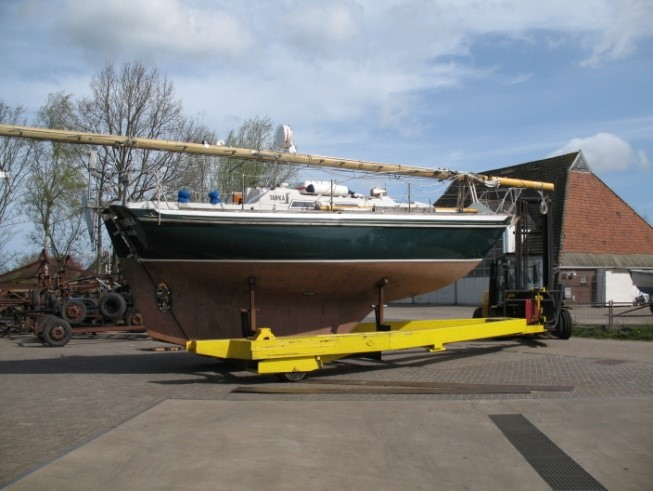
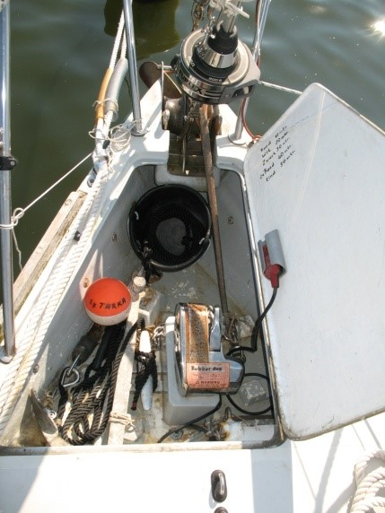
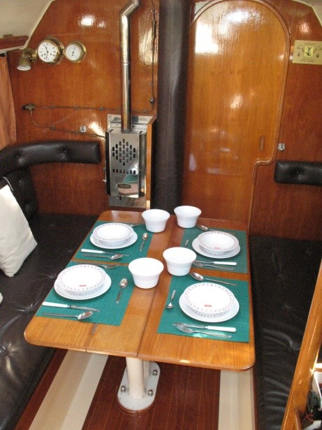

<!DOCTYPE HTML PUBLIC "-//W3C//DTD HTML 4.01 Transitional//EN">
<html><head></head>
<body><table style="text-align: left; width: 1024px;" border="0" cellpadding="2" cellspacing="2">
  <tbody>
    <tr>
      <td style="vertical-align: top;"><br>
      </td>
      <td style="vertical-align: top;">
      <h1 style="text-align: center;"><br>
      <span style="font-size: 24pt; font-family: &quot;Times New Roman&quot;,serif;"></span><span style="font-size: 24pt; font-family: &quot;Times New Roman&quot;,serif;">Ausrüstung
der Segeljacht&nbsp;  TARKA.</span></h1>
      <h3 style="text-align: center;">(Mit einige Bilder)</h3>
      </td>
    </tr>
  </tbody>
</table>
<br>
<table style="text-align: left; width: 1024px; margin-left: auto; margin-right: auto;" border="0" cellpadding="2" cellspacing="2">
  <tbody>
    <tr>
      <td style="vertical-align: top;"><br>
      <span style="font-style: italic; font-weight: bold;">Tarka vor
Anker auf dem Orwell Fluss in England</span><br>
      </td>
    </tr>
  </tbody>
</table>
<br>
<table style="text-align: left; width: 1024px;" border="0" cellpadding="2" cellspacing="2">
  <tbody>
    <tr>
      <td style="vertical-align: top;">Tarka ist ein Nicholson 31,
entworfen und gebaut von Camper und Nicholson in Gosport, England. <br>
Sie ist ein klassisch gebautes Langkielboot. <br>
Abmessungen 9,32 x 3,12 x 1,52 m.<br>
Gewicht : 6 t. Sie hat ein Sandwich-Deck und Aufbau. Das Boot hat eine
völlige S-Spant und ist dadurch u.a. sehr <br>
nachgiebig und freundlich im Seegang. Für einen anspruchsvollen Segler,
der gerne ferne Küsten wünscht zu&nbsp;&nbsp;&nbsp; besuchen, ist diese
Nicholson die ideale seetüchtige
Segeljacht.&nbsp;&nbsp;&nbsp;&nbsp;&nbsp;&nbsp; &nbsp;&nbsp;&nbsp;
&nbsp;&nbsp;&nbsp; &nbsp;&nbsp;&nbsp; &nbsp;&nbsp;&nbsp; <br>
Dies hat der heutige Eigentümer mit einigen sehr interessanten längeren
Segeltörns überzeugend bewiesen. Die Nicholson ist für derartige
Segeltörns absolut vollständig und überkomplett ausgerüstet. <br>
Nur Wasser und Proviant einnehmen; weiter ist alles Erdenkliche für
eine sichere Reise an Bord vorhanden<br>
Das Layout des Bootes ist, wie erwartet, klassisch und besonders für
längere Segeltörns geeignet : u.a. wegen Entwurf, Form des Rumpfes,
Verhalten im Wasser, reichlich Proviantschuppen für mehrere Monate,
reichlich großer Wassertank ( 330 ltr. ) usw. <br>
Außerdem kann sie problemlos Single handed oder mit kleiner Crew
gesegelt werden. <br>
Anzahl Kojen: 6, einschließlich Lotsenkoje.<br>
MwSt. ist bezahlt worden.&nbsp; <br>
      <br>
      <br>
      <br>
      </td>
      <td style="vertical-align: top;"><br>
      <span style="font-weight: bold; font-style: italic;">klassisch
gebautes S-Spant Langkielboot</span><br>
      </td>
    </tr>
  </tbody>
</table>
<table style="text-align: left; width: 1024px;" border="0" cellpadding="2" cellspacing="2">
  <tbody>
    <tr>
      <td style="vertical-align: top;"><br>
      </td>
      <td style="vertical-align: top;">Das Unterwasserschiff ist
versehen mit mehreren Schichten Coppercoat, Epoxy-Farbe und Antifouling.<br>
Zweifarben-Laterne am Bug-Korb. <br>
Ankerwinde: Lewmar, elektrisch, versunken im Deck.&nbsp; <br>
CQR Anker 35 Lb. mit 50 m rostfreier Stahl-Ankerkette.<br>
Stockanker: etwa 15 kg. <br>
Das Stockanker kann durch ein 10 mm SS-Kettenglied an eine Leine
gekoppelt werden, oder an die SS-Ankerkette.<br>
Ankergewicht 15 kg. (Stahl/Blei).<br>
Zwei reichlich bemessene, bronzene Bugrollen für Kette und Leine. <br>
Kettenstopper.<br>
Teufelskralle für die Kette.<br>
Sicherheitsleinen im Gangbord<br>
Dinghi: faltbares Bananaboot mit Riemen, Halter für
Außenbordmotor.&nbsp; <br>
Mast, Segel, Seitenschwerte und Ruder. (n.a.B.)&nbsp;&nbsp;&nbsp; <br>
Teak Fenderbrett, 7 Langfender und 1 großer Kugelfender. <br>
Decksbeleuchtung<br>
Fuß pumpe für 2 Falträder und Fender.&nbsp;&nbsp;&nbsp;
&nbsp;&nbsp;&nbsp; &nbsp;&nbsp;&nbsp; &nbsp;&nbsp;&nbsp;
&nbsp;&nbsp;&nbsp; &nbsp;&nbsp;&nbsp; <br>
      <span style="font-weight: bold;"><br>
      </span><br>
      </td>
    </tr>
  </tbody>
</table>
<table style="text-align: left; width: 1024px;" border="0" cellpadding="2" cellspacing="2">
  <tbody>
    <tr>
      <td style="vertical-align: top;">Solarkollektor auf der Garage
montiert.<br>
Rettungsinsel im Kanister, montiert auf dem Kabinendach, Offshore
vier Personen.<br>
Winschen: 4 Stück ST Lewmar und Enkes.<br>
Deckblöcke: 4 Stück liegende Blöcke mit Klemmen für Reff-Leine der
Genua, Genneker und Backstagleinen usw.<br>
Sprayhood mit extra Handgriff und Spanndrähte. Eine sehr starke
Konstruktion.<br>
Cockpit-Zelt mit Fenster, Türöffnungen und teilbarer Bügel. Aufgehoben
im Vorschiff.<br>
Plane bis zum Mast. (n.a.B.)<br>
Sonnensegel.<br>
Großsegelkleid.<br>
Separate Schwimmleiter. (n.a.B.)<br>
Windsteueranlage: Schwere Ausführung Typ Bouwvaan, mit Standard- und
Sturmblatt. <br>
Außenbordmotor am Heckstuhl, Susuki 2 PS.<br>
Heck-Licht am Heckstuhl.<br>
Bruce Heckanker mit Kette und Leine in einer Röhre am Heckstuhl.<br>
      </td>
    </tr>
  </tbody>
</table>
<table style="text-align: left; width: 1024px;" border="0" cellpadding="2" cellspacing="2">
  <tbody>
    <tr>
      <td style="vertical-align: top;"><br>
      <b style=""><i style=""><span style="font-size: 12pt; font-family: &quot;Times New Roman&quot;,serif;" lang="EN-GB">Tarka in St.Katharine's Dock in London</span></i></b><br>
      </td>
      <td style="vertical-align: top;">
      <div style="text-align: left;"><br>
      </div>
      <span style="font-weight: bold; font-style: italic;">Die Kajüte.</span><br>
      </td>
    </tr>
  </tbody>
</table>
<br>
<table style="text-align: left; width: 1024px;" border="0" cellpadding="2" cellspacing="2">
  <tbody>
    <tr>
      <td style="vertical-align: top;"><span style="font-weight: bold;">Mast
und Segel:</span><br>
Alu - Durch Deck - Mast mit Baum, Winschen, Fallstopper und sichere <br>
Maststufen bis oben.<br>
Mast-Stütze, so dass der Mast während der Winter-Bergung auf dem Boot
liegt. (n.a.B.)<br>
Radarreflektor: Lensref. Dreifarben-Laterne, Maschinen-Licht,
Deck-Strahler, Windex.<br>
Fallen: für Großsegel, Genua, Dirk und Ersatzfall.<br>
Alu-Baum mit Winschen, Reff-Stopper und Lazyjacks.<br>
Spinnaker: Teleskopbaum in Halterungen.<br>
Schwere SS-Takelage mit übergroßem Hasselfors Wantenspanner mit Toggle.<br>
Extra Vorstag für den Halbwinder. Dieser Vorstag kann auch mit einem
Pelikanhaken hinter dem Anker ins Deckauge befestigt werden, für den
Sturmfock mit Stagreiter.<br>
Genua Rollreffanlage,&nbsp; Furlex. ( 2015 )&nbsp; 32 qm mit
Schutzschlauch. <br>
Großsegel 22 qm, drei Reffe mit Segelkleid. <br>
Halbwinder ( Genneker), 50 qm. im Schlauch.<br>
Sturm-Fock, 7 qm mit Stagreiter. (n.a.B.) <br>
Fock 1, mit Stagreiter.&nbsp; (n.a.B.) <br>
      </td>
    </tr>
  </tbody>
</table>
<table style="text-align: left; width: 1024px;" border="0" cellpadding="2" cellspacing="2">
  <tbody>
    <tr>
      <td style="vertical-align: top;"><b style=""><span style="font-size: 12pt; font-family: &quot;Times New Roman&quot;,serif;" lang="EN-GB">Lay-out:<span style="">&nbsp;&nbsp;&nbsp;&nbsp;&nbsp;&nbsp;&nbsp;&nbsp;
      <br>
      </span></span></b><span style="font-size: 12pt; font-family: &quot;Times New Roman&quot;,serif;" lang="EN-GB">See drawing.</span> </td>
      <td style="vertical-align: top;"><br>
      </td>
    </tr>
  </tbody>
</table>
<table style="text-align: left; width: 1024px;" border="0" cellpadding="2" cellspacing="2">
  <tbody>
    <tr>
      <td style="vertical-align: top;"><span style="font-weight: bold;">Vor
piek: &nbsp;<br>
      </span>Zwei Kojen mit Kissen und Füllstück.<br>
Unter den beiden Kojen reichlich Abstellräume für Sturmfock (n.a.B),
Genneker, Wasserschläuche, Tauchpumpe,&nbsp; <br>
Schwimmwesten usw.<br>
Lagerung für Cockpit-Zelt und dafür benötigten teilbaren Bügel.<br>
SS-Bojen-Haken. <br>
12 Volt Unterwasserpumpe für allgemeine Verwendung und Deckreinigung.<br>
Schrank für Kleidung, Signalpatronen*, Zubehör für den Dinghy,
Gastflaggen für fast alle Europäischen Länder, kompletter Satz
Signalflaggen usw.<br>
Vorluke mit Belüftung.<br>
Zugang zum Kettenraum.&nbsp; Rettungsweste.<span style="font-weight: bold;"><br>
      </span></td>
      <td style="vertical-align: top;"><br>
      <span style="font-weight: bold; font-style: italic;"></span><br>
      </td>
    </tr>
  </tbody>
</table>
<table style="text-align: left; width: 1024px;" border="0" cellpadding="2" cellspacing="2">
  <tbody>
    <tr>
      <td style="vertical-align: top;"><br>
      <span style="font-weight: bold; font-style: italic;">Lavac
Toilette, sewagetank</span><br>
      </td>
      <td style="vertical-align: top;"><span style="font-weight: bold;"><br>
Waschraum:</span><br style="font-weight: bold;">
Porzellan Waschbecken mit Hand-und Fuß pumpe. <br>
Kleiderschrank. Toilettenkästchen&nbsp; für Toilettensachen. <br>
Unter dem Waschbecken Lagerraum für Ankerball, Kegel, Behälter für
Spiritus, Fülltrichter, Reinigungsmittel usw.<br>
Toilette: Lavac Vakuumtoilette mit Rumpfventil.
Hängeschrank.&nbsp;&nbsp;&nbsp; <br>
Schmutzwassertank: ca. 55 ltr.&nbsp; mit 2 Wegventil und Rumpfventil.
&nbsp;&nbsp;&nbsp; &nbsp;&nbsp;&nbsp; <br>
Waschraum /Toilette kann durch zwei Schiebetüren vom Vor piek und der <br>
Kajüte getrennt werden. <br>
      <br>
      <br>
      <br>
      </td>
      <td style="vertical-align: top;"><br style="font-weight: bold; font-style: italic;">
      <span style="font-weight: bold; font-style: italic;">Waschbecken,&nbsp;
Kästchen</span><br>
      </td>
    </tr>
  </tbody>
</table>
<table style="text-align: left; width: 1024px;" border="0" cellpadding="2" cellspacing="2">
  <tbody>
    <tr>
      <td style="vertical-align: top;"><br>
      <span style="font-weight: bold; font-style: italic;">Hundekoje,
Scheinwerfer, Werkzeug, usw.</span><br>
      </td>
      <td style="vertical-align: top;"><span style="font-weight: bold;">Kajüte:</span><br>
Kajüte mit zwei ausschiebbaren Sitzbänken/Kojen, Lotsenkoje an BB und
eine <br>
sehr geräumige Hundekoje.<br>
Ein Barometer. <br>
Unter der Back- und Steuerbordsitzbank eine große Anzahl
Kunststoff-Behälter mit SS Materialien, Elektromaterialien, Schrauben,
Muttern, Segelreparatur, <br>
Speedy stitcher, Segelmacher Handschuh, Gasfittings, Reserve-Lampen
usw.<br>
Weiter noch Gaskupplungen, um Gasflaschen im Ausland zu füllen,
Wasserkupplungen usw.<br>
Behälter mit Reserve-Teilen für die Hauptmaschine wie Öl-und
Brennstoff-Filter, Packungen, Keilriemen, Wasserpumpe Impeller,
Zinkanoden, Zylinderkopfdichtung usw. <br>
Die Lotsenkoje wird im Moment verwendet zur Bergung <br>
von 2 Falträdern in einer Schutzhülle.<br>
Das zur Lotsenkoje gehörende Kissen ist momentan nicht an Bord.
(n.a.B.) <br>
Sehr stabiler Tisch, klappbar, mit Slingerleiste.<br>
      <br>
      </td>
    </tr>
    <tr>
      <td style="vertical-align: top;">Taylors Dripfeed Heizung mit
Flammenwächter. <br>
Diese Heizung verwendet selbstverständlich keine Elektrizität und
funktioniert mit Diesel oder Petroleum.<br>
Schrank für Pilots, Bücher und Gebrauchsanweisungen. &nbsp;<br>
Medizin-Schrank, Getränke-Schrank usw.<br>
In der Hundekoje sind u.a. untergebracht: Handscheinwerfer, zwei
Autohelme, sehr ausgiebiger Werkzeugkasten, automatische Rettungsweste,
Wärmestiefel, Überlebungsanzug<br>
      </td>
      <td style="vertical-align: top;"><br>
      <span style="font-weight: bold; font-style: italic;">Taylors
Dripfeed Heizung</span><br>
      </td>
    </tr>
    <tr>
      <td style="vertical-align: top;"><br>
      <span style="font-weight: bold; font-style: italic;"></span><b style=""><i style=""><span style="font-size: 11pt; font-family: &quot;Calibri&quot;,sans-serif;" lang="EN-ZA">SS-Backofen, Pendeltisch.</span></i></b> </td>
      <td style="vertical-align: top;">Die Kombüse ist mit zwei
Spülbecken und Frisch- und Seewasser-Fußpumpen versehen. <br>
Der kardanisch aufgehängte SS-Backofen mit Doppel-Verglasung ist
thermisch gesichert.&nbsp; Elektronische Zündung beider Brennstellen
und
Ofen, mit Topfhaltersets.<br>
      <br>
In der Nähe des Anrichtetisches ein perfekt funktionierender
halbkardanischer Pendeltisch.&nbsp;&nbsp;&nbsp; <br>
Gut isolierte Kühlbox. Ca. 80 ltr. (kein Kompressor)<br>
Unterbringung für Behälter und Pfannen, Schnellkochtopf, Besteck usw. <br>
Die Original-Teller mit Camper und Nicholson-Emblem sind immer noch
anwesend.<br>
Zwei kleine Mannlochdeckel geben Zugang zum Wassertank. <br>
Tiefe Bilge mit Lenzpumpe. Bedienung mit Hebel im Cockpit.<br>
Feuerlöscher.<br>
&nbsp; </td>
    </tr>
    <tr>
      <td style="vertical-align: top;">Alle Kojen ( excl. natürlich die
Hundekoje) sind versehen mit Kojen-Segel.<br>
Unter und hinter den Sitzen, den Schränken und dem Anrichtetisch
befinden sich <br>
geräumige&nbsp; Abstellräume für Proviant usw.<br>
Man kann problemlos Proviant für mehrere Monate und Personen mitnehmen.<br>
Großzügiger Kartentisch, geeignet für eine Halbe BA-Seekarte. Gute
Seekartenbergung. Genügend Raum für alle notwendigen Navigationsmittel
wie Bleistifte, Gummi, Zirkel und Kartenlupe.&nbsp;&nbsp; <br>
Mehrere Pilots anwesend für England, Schottland, Ostsee usw. <br>
Falls man interessiert ist sind ungefähr 200 ältere BA Seekarten von
ganz England, Schottland und Norwegen verfügbar, sowie von den
Niederlanden, Dänemark, Finnland, Ostsee, Finnische Saimaa Seen und
Russland. <br>
Unter der Hundekoje sind die beide Batterien und Reserve-Teile
untergebracht.<br>
Die Sitze, Lotsenkoje und Hundekoje sind versehen mit Kissen <br>
mit brauner Steppdeckenmaserung.<br>
Zwei Kissen für die Cockpit Sitze.<br>
Ankerlaterne mit Kabel und LED-Leuchte<br>
      </td>
      <td style="vertical-align: top;"><br>
      <span style="font-weight: bold; font-style: italic;"></span><br>
      <span class="deel4"><b style=""><i style=""><span style="font-size: 11pt; font-family: &quot;Calibri&quot;,sans-serif;" lang="EN-ZA">Alle </span></i></b></span><b style=""><i style=""><span style="font-size: 11pt; font-family: &quot;Calibri&quot;,sans-serif;" lang="EN-ZA">Kojen mit
Kojen-Segel.</span></i></b><br>
      </td>
    </tr>
    <tr>
      <td style="vertical-align: top; width: 50%;"><span style="font-weight: bold;"></span><span style="font-weight: bold;"><br>
      </span><br>
      <span style="font-weight: bold;"></span><span style="font-weight: bold; font-style: italic;">Kartentisch,
Instrumente usw.</span>
      </td>
      <td style="vertical-align: top;"><br>
      <b style=""><i style=""><span style="font-size: 11pt; font-family: &quot;Calibri&quot;,sans-serif;" lang="EN-ZA"></span></i></b><span style="font-weight: bold;">Nautik/Navigation:</span><br style="font-weight: bold;">
Die vorgeschriebene Navigationsbeleuchtung. <br>
Elektrische Gruppenverteilung mit Schalter, Automaten und
Led-Indikation.<br>
Land-Anschluss mit FI-Schutzschalter, Batterieladegerät, Kabel und
Verlängerungs-Kabel.<br>
Wechselrichter 12 Volt DC/ 230 Volt AC, 200 Watt.<br>
Steuerkompass: Sestrel Moore mit Nacht-Beleuchtung und Pelorus.<br>
Kartenplotter: Raymarine eS75. Kann aufgestellt werden an SB Seite
unter dem Sprayhood.<br>AIS transponder ( 2019) Class B Em-Trak B350 5Watt SOTDMA verbunden mit dem Raymarine plotter.<br>
Navionics Karten.<br>
Log/Echolot: Autohelm Bidata beim Kartentisch mit Multi Repeater im
Cockpit.<br>
AIS Empfänger: NASA Marine, gekuppelt am GPS<br>
GPS Navigator: Furuno GP-32 mit WAAS<br>
Radar: Raytheon R10XX<br>
UKW-Schiffsfunk: Sailor RT 144 mit ATIS und gekuppelte
&nbsp;&nbsp;&nbsp; &nbsp;&nbsp;&nbsp;&nbsp;&nbsp; <br>Alle Kojen mit
Kojen-Segel.<br>
SWR Anzeige. In See-Ausführung, kann auf allen <br>
Kanälen mit vollem Vermögen arbeiten.<br>
Hand-UKW: ICOM IC-M71
      </td>
    </tr>
  </tbody>
</table>
<table style="text-align: left; width: 1024px;" border="0" cellpadding="2" cellspacing="2">
  <tbody>
    <tr>
      <td style="vertical-align: top;">Navtex: Lokata typ 1 mit
Papier-Drucker<br>
Radio/CD Spieler: JVC AM/FM mit zwei Lautsprechern.<br>
Nachrichtenempfänger: Yeasy FRG-7700, AM-SSB 0  30 Mc.<br>
Fernglas: Steiner 7 x 50.<br>
Handlampe: Mag-Lite Groß.<br>
Steuer-Automat: Autohelm 2000, Autohelm 800, Mini Peilkompass. <br>
Hand-Scheinwerfer in Halterung Hundekoje.<br>
Beleuchtung mit weißer- und roter Nachlichtleuchte. Viele Leuchten
ausgestattet mit LED.<br>
Radar-Reflektor: Lensref oben im Mast.<br>
      </td>
    </tr>
  </tbody>
</table>
<table style="text-align: left; width: 1024px;" border="0" cellpadding="2" cellspacing="2">
  <tbody>
    <tr>
      <td style="vertical-align: top; width: 50%;"><span style="font-weight: bold;">Motorraum: </span><br>Motor:
Yanmar 2 QM 20. Zwei Zylinder mit direkter Einspritzung, Ventilheber,
Kurbel, Filter und Wasserabscheider.&nbsp;&nbsp;&nbsp; <br>Brandstofftank mit Standglas und Wassersack. Inhalt ca. 70 l. <br>Morse Einhand-Bedienung im&nbsp; Cockpit.<br>Motor-Alarm: optisch und akustisch für Öldruck, Wasser-Temperatur und Batterie.<br>Separate Vakuum Ölwanne-Pumpe. (n.a.B.)<br>Verbrauch des Motors ist sehr gering. Bei ruhiger See und einer Geschwindigkeit von 5liegt der Verbrauch bei 1,1 Liter /St.<br>Sehr
viele Reserve-Teile wie: Impeller, Zink-Anoden, Keilriemen, Temp.-und
Ölfühler, Packungen, Filter, Zylinderkopfdichtung usw.&nbsp;&nbsp;
&nbsp;&nbsp;&nbsp; &nbsp;&nbsp;&nbsp; &nbsp;&nbsp;&nbsp;
&nbsp;&nbsp;&nbsp; &nbsp;&nbsp;&nbsp; &nbsp;&nbsp;&nbsp;
&nbsp;&nbsp;&nbsp; &nbsp;<br>In der Hundekoje befindet sich eine sehr umfangreiche Werkzeugkiste. <span style="font-weight: bold;"><br>&nbsp;&nbsp; <br></span><br>
      </td>
      <td style="vertical-align: top;">
      <div style="text-align: center;"><br>
      </div>
      <div style="text-align: center;"><b><i style=""><span style="font-size: 11pt; font-family: &quot;Calibri&quot;,sans-serif;" lang="EN-ZA">2
Zylinder Diesel 20 PS.</span></i></b>
      </div>
      </td>
    </tr>
  </tbody>
</table>
<table style="text-align: left; width: 1024px;" border="0" cellpadding="2" cellspacing="2">
  <tbody>
    <tr>
      <td style="vertical-align: top;"><br>
      <span style="font-weight: bold; font-style: italic;">Cockpit, Pinne, Windsteuer Anlage.</span><br>
      </td>
      <td style="vertical-align: top;"><span style="font-weight: bold;">Cockpit:
&nbsp;</span>&nbsp;&nbsp; <br>Das
Cockpit verfügt über sichere und bequeme Bänke. Die sehr geräumige
Bakskiste enthält, an Haken aufgehängt, mehrere Leinen, Trosse,
Segelleine,&nbsp; Halbwinder Schoten&nbsp; usw.<br>SS- Bojen-Haken im Vor piek.&nbsp; <br>Genügend Raum für zwei extra Dieselkanister*, 2 Reserve Gasflaschen*, Wasserkanister, Petroleum, Fender, Riemen usw.<br>Gasbehälter mit Abfluss nach außen.&nbsp; Der Gasbehälter akzeptiert die bekannten grünen <br>5 kg Propan-Flaschen.&nbsp; <br>Unter
der hinteren Sitzbank ist Platz für Schmieröl* für Motor und&nbsp;
Untersetz-Umkehrgetriebe*, Kanister für Altöl, Petroleum, Spiritus usw.<br><br>
&nbsp;&nbsp;&nbsp;&nbsp;&nbsp; &nbsp;&nbsp;&nbsp; &nbsp;&nbsp;&nbsp;
&nbsp;&nbsp;&nbsp; &nbsp;&nbsp;&nbsp; <br>
      <br>
      </td>
    </tr>
    <tr>
      <td style="vertical-align: top;"><br>
      <span style="font-weight: bold; font-style: italic;">Tarka&nbsp; irgendwo in Norwegen.</span><br>
      </td>
      <td style="vertical-align: top;"><br>
      <span class="deel4"><b style=""><i style=""><span style="font-size: 11pt; font-family: &quot;Calibri&quot;,sans-serif;" lang="EN-ZA">Tarka auf Spitsbergen (Svalbard)</span></i></b></span><br>
      </td>
    </tr>
  </tbody>
</table>
<table style="text-align: left; width: 714px; height: 32px;" border="0" cellpadding="2" cellspacing="2">
  <tbody>
    <tr>
      <td style="vertical-align: top;"><div style="text-align: center;"><span style="font-weight: bold;">Die mit einen Sternchen (*) gekennzeichneten Teile gehören nicht zur Lieferung beim Verkauf. </span><br style="font-weight: bold;"><span style="font-weight: bold;">(n.a.B)&nbsp; bedeutet: Momentan Nicht an Bord, gehört jedoch zur Lieferung beim Verkauf.</span><br style="font-weight: bold;"></div><br></td></tr></tbody></table><br>
<br></body></html>